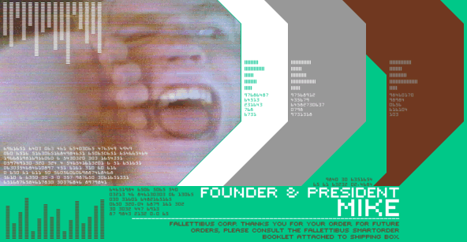

Hi. I'm Mike Falletti. I'm in charge of this crappy web site. I hate the colour forest green. I'm not very talented, but that's another story. I was born in Boston, Massachusetts, on May, the twenty-sixth, nineteen-hundred and eighty-four. That would make me sixteen years of age. As you can see, I don't like numbers. 78916165160987935. Nevermind. I'm now living on Cape Cod, Massachusetts. It's a man-made island. It's not very fun. No, it isn't. I have grey eyes. I like to spell "gray" with an "e." I enjoy using harmful bleaches to make my hair turn unnatural shades of blonde. I also like to scratch my left ear and wash bedpans. I go to Sturgis Charter School. It's not to be confused with Sturgis, the biker town in the midwest. I'm a junior, so I'm looking at colleges. I'm too untalented to get into any art school, I believe. That's OK. I'll pretend. I like pretending. My favourite word is "inveterate." I got the name "Fallettibus" from a nickname started by Jillian Shuttleworth in Latin class. Jillian shoots rifles. She scares me. I enjoy skiing. I've never tried snowboarding. That's how uncool I am. I also like to run. Not just to run away from my crazy parents, but to run for sport, as well. I would like to make cheese someday, but only to be able to say to people "hey, I made some cheese." I do not smoke. I do not drink. I never will. I do drink Clearly Canadian, however. It's quite lovely. I speak different languages. I'm not good at all of them. English, French, Latin, and German. Speaking of French, I went to France in July '00. It was fun. I had to wear a Speedo there. That was not fun. I've never seen Titanic. I like to watch trashy horror movies that everyone else hates. It's a guilty pleasure of mine. I'm also addicted to Who Wants To Be a Millionaire. They have that show in France, only it's called Qui Veut Gagner des Millions. That translates to "who wants to win millions." The host is a funny-looking guy. And the top prize is three-million francs, which is five-hundred thousand dollars. I'm a conflict avoider. So, if I don't like you, you'll probably never know. Maybe that's why everybody loves me. I mean, why wouldn't you?
|